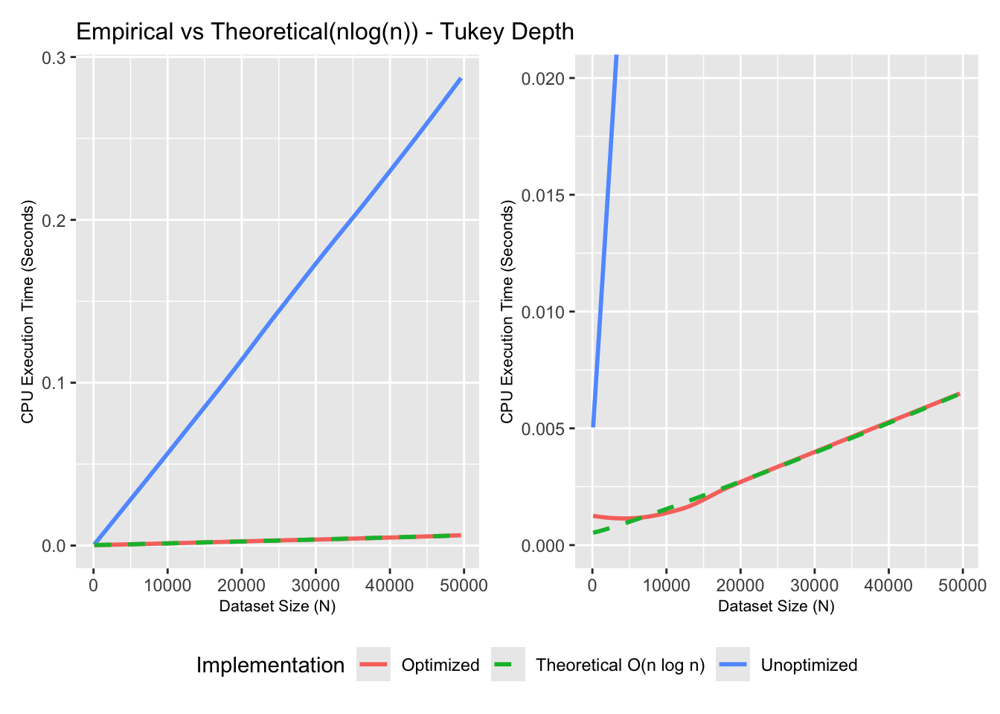
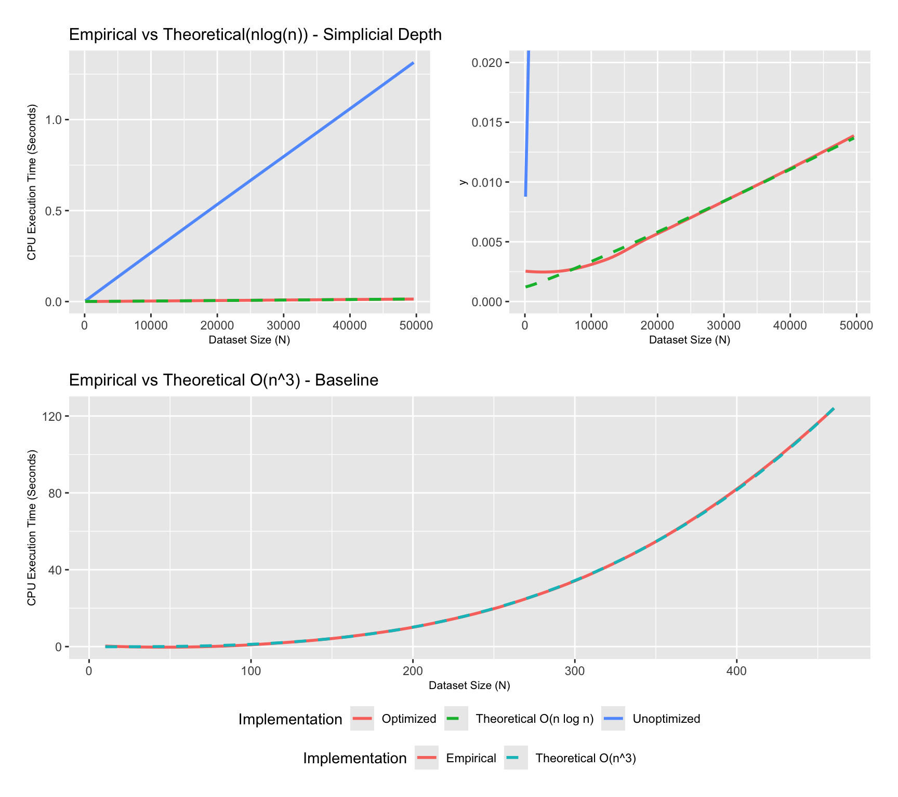
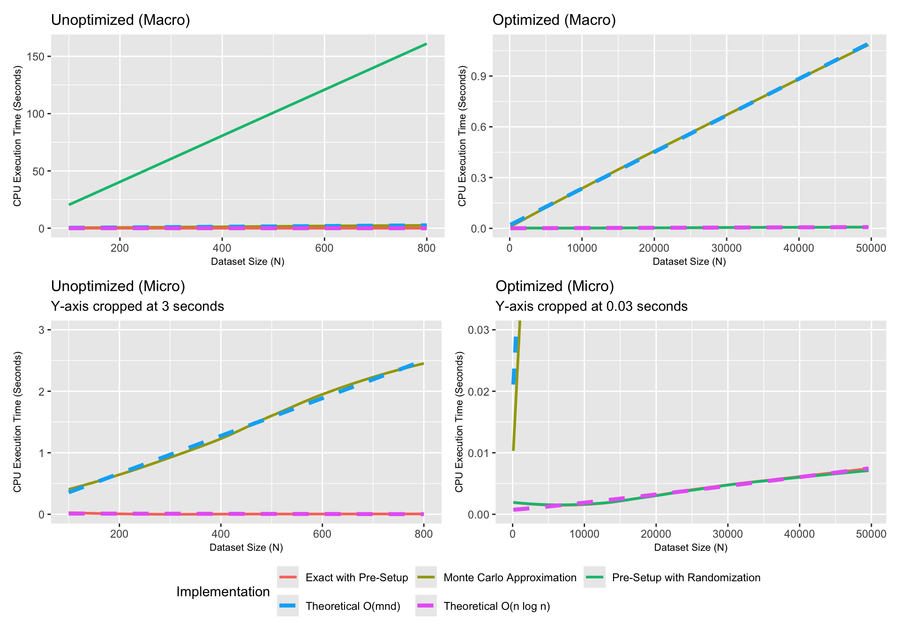
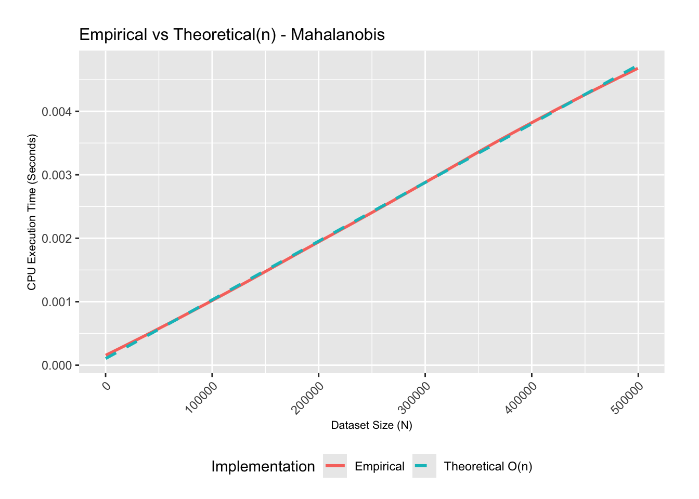

Abstract
With all the code optimized, my focus shifted to empirical vs. theoretical verification across the updated set of bivariate data depth algorithms. Having eliminated the computational bottleneck in Week 6, I evaluated how Integrated Rank-Weighted (IRW), Tukey’s halfspace, Mahalanobis, and Simplicial depth scale across dataset sizes ranging from \(n = 100\) to \(n = 100,000\). To evaluate mathematical complexity against hardware noise, I incorporated local polynomial regression (loess) smoothing curves to reveal the underlying asymptotic trends. My analysis confirms that the refactored implementations match their theoretical Big-O expectations.
Introduction
In last week’s post, we performed a deep analysis into The R Inferno (Burns 2011), pre-allocating vector lengths, and replacing iterative loops with vectorized operations. Reducing our execution time down to under 0.4 seconds for a million points was a massive victory, but it was only half the battle.
The ultimate objective of a runtime analysis is asymptotic verification: confirming whether the empirical scaling of our code as \(n \to \infty\) matches the theoretical Big-O complexity established in statistical/computational geometry literature. This week, I took the refactored code, fed it massive, randomly generated datasets across a wide range of sizes, and built an interactive dashboard to evaluate their performance.
Part 1: Filtering Hardware Noise
When executing analysis over thousands of iterations, raw runtime data naturally exhibits minor micro-spikes and jitter. Because of physical hardware realities and background activity, runtime curves are inherently noisy (Wickham 2019, chap. 23).
With the help of AI’s data visualization techniques, I learned that data scientists often rely on local polynomial regression smoothing (loess) to filter out this physical hardware noise. By layering a smooth trend line over our raw data, we can isolate the true underlying mathematical trend of the algorithm’s runtime and overlay our theoretical Big-O regression curves for direct comparison.
The Control Variables: What Stayed the Same?
Before evaluating the graphs, it is worth noting two intentional exceptions in my optimization pipeline.
Mahalanobis Depth: This algorithm required no syntax optimization. Since parametric Mahalanobis depth relies entirely on covariance matrices and inverse linear algebra, it was already vectorized by R’s core built-in operations.
The Simplicial \(O(n^3)\) Baseline: I deliberately did not optimize my original brute-force Simplicial implementation. The entire purpose of that algorithm is to serve as a poor performance baseline that scales at a cubic \(O(n^3)\) rate based on simple triangle counting. Leaving it unoptimized provides the baseline contrast required to visually appreciate the \(O(n \log n)\) angular sweep algorithm.
Part 2: The Interactive Dashboard
To evaluate the performance gains across each algorithm without cluttering the page, I have structured the empirical vs. theoretical scaling curves into an interactive dashboard.
To inspect the runtime scaling behavior of each optimized function against its theoretical expectation, click through the tabs below. In the following tabs, note that:
Macro View refers to the full, zoomed-out version of the graph, showing the overall runtime trajectory from start to finish.
Micro View refers to a zoomed-in perspective that eliminates the “crush effect” caused by slower algorithms dominating the y-axis, allowing you to clearly visualize the curves of the faster optimizations.
Tukey’s halfspace depth implementation relies on projecting bivariate data onto 1D vectors and taking the minimum 1D depth observed over all directional vectors. To truly appreciate the efficiency of the optimized algorithm, we evaluate its runtime through two distinct lenses.
The Macro View (Zoomed-Out, left): The unoptimized algorithm’s execution time explodes rapidly as dataset size increases. This creates a visual “crush effect”, compressing our optimized curve into a perfectly flat line along the bottom of the graph.
The Micro View (Zoomed-In, right): Due to the “crush effect”, the macro view hides the true asymptotic trajectory of the optimized algorithm. By zooming in on the bottom fraction of the y-axis, the expanded view allows us to overlay the theoretical regression curve and mathematically verify that our empirical runtime cleanly tracks its \(O(n \log n)\) theoretical expectation (Durocher et al. 2018).
The bivariate Simplicial depth algorithm relies on calculating the number of closed data triangles containing the target point. Since the geometry naturally relies on identifying sets of three, the baseline algorithm scales at an excruciatingly slow cubic \(O(n^3)\) rate (bottom graph) as expected. The top row of graphs visualize the pre and post optimization runtime of the combinatorial approach.
The Macro View (Zoomed-Out, top-left): As \(n \to \infty\), the execution time of the unoptimized algorithm skyrockets exponentially, making massive datasets extremely slow to process. The “crush effect” is noticed here as well. The optimized implementation sits at the \(y \approx 0\) floor of the graph, showcasing the massive improvement in runtime as a result of the optimizations from week 6.
The Micro View (Zoomed-In, top-right): Due to the “crush effect”, the macro view portrays the true asymptotic trajectory of the optimized algorithm to be linear, which is inaccurate. By zooming in on the bottom fraction of the y-axis, the expanded view allows us to overlay the theoretical regression curve and mathematically verify that our empirical runtime cleanly tracks its \(O(n \log n)\) theoretical expectation (Durocher et al. 2018).

Integrated Rank-Weighted depth relies on averaging the univariate depth measures across all directional vectors. Recall that, during Week 4 we implemented IRW depth three distinct ways - Exact IRW Depth (The Sweep Method), Sweep and Randomize Monte Carlo, and No Sweep Monte Carlo. Below we share the results for the runtime analysis of each pre and post optimization.
No Sweep Monte Carlo: As can be seen in the Unoptimized (Micro - Bottom Left) and Optimized (Macro - Top Right) graphs, while both follow a linear trajectory for this algorithm, optimizing the code flattens the slope, making the linear process much faster in the optimized version.
Angular Sweep Implementations: In the unoptimized panel (left side), the current dataset scale is insufficient to fully demonstrate the disparity between the theoretical \(O(n \log n)\) bound and the unoptimized ‘Exact with Pre-Setup’ algorithm. The latter seems to track the theoretical line perfectly because the workload at \(n=800\) is too small to show the underlying inefficiencies. However, the left panel effectively illustrates the poor performance of the unoptimized ‘Pre-Setup with Randomization’ algorithm. Using the optimized (Micro - Bottom Right) graph, we observe that post optimization, both the sweep algorithms perfectly track the theoretical \(n \log n\) line as \(n \to \infty\).

Relying primarily on covariance matrices and inverse matrix algebra, this depth measure utilizes R’s native vectorized operations, showcasing a linear runtime, and perfectly matching the theoretical expectation of \(O(n)\) (Mosler and Mozharovskyi 2022).

Code Availability
Each algorithm now performs at its theoretical asymptotic limit without computational bottlenecks. The final result is a complete suite of clean, optimized R functions. Each implementation is structured to accept a bivariate dataframe and a target query point, returning the depth value.
The complete, executable R scripts for all functions are available in the project repository.
Future Work
- Investigate methods to accurately compute data depth when datasets contain missing values.
- Explore the ‘Projection Median’, a measure of centrality introduced by (Durocher and Kirkpatrick 2005).
- Explore applications of data depth in Machine Learning and Artificial Intelligence.
References
Burns, P. 2011. The r Inferno. Lulu.com. https://books.google.ca/books?id=TFWMAwAAQBAJ.
Durocher, Stephane, Robert Fraser, Alexandre Leblanc, Jason Morrison, and Matthew Skala. 2018. “On Combinatorial Depth Measures.” International Journal of Computational Geometry & Applications 28 (December): 381–98. https://doi.org/10.1142/S0218195918500127.
Durocher, Stephane, and David Kirkpatrick. 2005. “The Projection Median of a Set of Points in r.” January, 47–51.
Mosler, Karl, and Pavlo Mozharovskyi. 2022. “Choosing Among Notions of Multivariate Depth Statistics.” Statistical Science 37 (3): 348–68. https://doi.org/10.1214/21-STS827.
Wickham, Hadley. 2019. Advanced R. 2nd ed. Chapman; Hall/CRC. https://doi.org/10.1201/9781351201315.